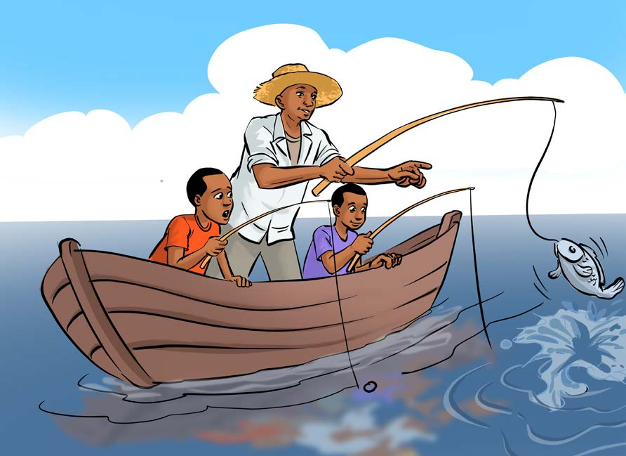

Fishing activity
Questions
1. Where do fishing activities take place?
2. What tools are used for fishing?

Fishing activity
1. Where do fishing activities take place?
2. What tools are used for fishing?